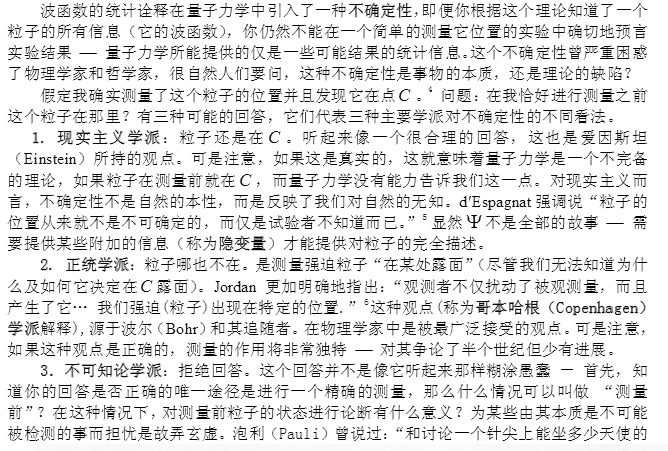

2017-08-31 02:13:00
下文原刊於http://www.guancha.cn/wangmengyuan/2017_08_31_425127.shtml
問：王先生，去年你就中國是否要建設下一代高能對撞機發表看法，在觀察者網刊出後，反響很大，引出後續的許多討論。不久前，你又撰文揭露了“天使粒子”的炒作以及混淆“粒子”與“準粒子”的誤導。
關於張首晟團隊的論文爭議，我注意到物理學家文小剛等人也談了看法，文小剛關於信息與物質統一的說法，從物理上怎麼理解？
答：先要說明，量子信息論不是真的物理，比超弦還不靠譜，而且因為不能像超弦那樣出無限多的論文，並沒有成為主流。
早年有拿它招搖撞騙的人，大家原本以為他有對量子力學的深入解釋，聽了演講才知道完全是空話，所以他最後在MIT土木系混了個教職，大概是土木系主任仰慕量子力學，又分不出故弄玄虛。
基本上這個理論說量子信息就是整個現實宇宙。用計算器做比喻，它說程序就是整個計算器，硬件是幻想出來的。這當然是胡扯。
不過，文小剛的量子比特海並不只是20多年前的量子信息論。他所發明的弦網（String-net Liquid）也和超弦無關（名字選擇用“弦”這個字是很不明智的，他顯然還不理解超弦的名譽現在有多臭），反而類似Loop Quantum Gravity和Penrose的Spin Networks。這些都是很有意思的研究，但也都非常、非常、非常困難，尤其要無中生有，同時產生Yang-Mills方程式、廣義相對論和量子糾纏。以往高能物理界的嘗試，如超弦和LQG，多是從前兩者出發（Penrose算是數學物理的人，所以SN我不熟）。文小剛卻是以量子糾纏為起點，這是個很好的點子。雖然現在他的理論還很不成熟，我認為是值得有幾百人的幾十個團隊投入十年左右的時間，看看是否能有結果。他說的需要新的數學，我也能理解，那麼數學界也應該有所投入。但是這終究是個Highly Speculative（很可能失敗）的嘗試，絕對不能像超弦那樣，全高能物理界幾十萬人通通都只研究一個點子，結果點子失敗了，學界卻已經投入太多學術生涯而無法放棄。
問：我還有一個一直以來的疑問，就是對“量子糾纏”現象該如何理解，畢竟這是有實驗做出來的，中國還花了人力物力發射了量子衛星，而潘建偉的工作除了量子密鑰分發，最重要的就是利用了量子糾纏的量子隱形傳態。我看到你對波函數坍縮理論的批評中，提到了唯心論的不可接受，但似乎你並不反對非局域的量子力學解釋。那麼量子信息的超距傳輸，或者按文小剛的理論，空間就是“量子比特海”，這個方向，目前做的實驗，是否是有前途的？
答：我對量子力學的非局部性，不只是“不反對”，而且認為過去40年高能物理界忽視了它，是理論研究上的最大錯誤。在這點上，我和文小剛的看法是完全一致的。這並不代表文小剛的弦網就是正確的答案，不過至少他問的是正確的問題。
我可以理解一個學凝態理論的人，見過的宇宙比高能物理要多得多，畢竟高能物理只有一個宇宙，而不同凝態樣本都可能是他們的新宇宙。所以他的點子可能比高能物理人靈活得多。然而做凝態理論的人，一般會低估沒有實驗引領理論時的困難。他要用弦網來解決高能物理的難關，那麼即使用的是凝態理論的點子和方法，仍然必須面對研究高能物理的難題，也就是沒有任何實驗可做。他必須從基本假設開始，完全只依靠邏輯，而派生出前面提過的Yang-Mills方程式、廣義相對論和量子糾纏。我感覺他還不完全理解這有多困難，尤其量子糾纏和廣義相對論有基本的邏輯矛盾（參見我Blog的第三篇文章），即前者是非局部的，而後者遵從局部性原則。弦網立足於量子糾纏，所以他在文中說他目前無法派生出廣義相對論，是可以事先預期的。
總之，弦網似乎是一個值得嘗試的新點子，不過不要抱太大的希望，畢竟這個問題無法做實驗，而且有埋得很深的內在矛盾，所以是極為困難的。
問：你博客的文章裡贊同了玻姆的理論，近年也有報導反映了玻姆歸來，說最新的實驗結果（參見https://www.newscientist.com/article/2078251-quantum-weirdness-may-hide-an-orderly-reality-after-all/）支持了所有的粒子都有確定的軌跡。我雖然不是學物理的，但覺得量子力學不同解釋至今沒有定論，長期維持這種局面，對學物理的學生應該很不利吧？如果要學習量子力學，到底從什麼入手才是正途？
答：這些“實驗”並不是真的實驗，而是Thought Experiments。它們的目的是檢驗Bohmian Mechanics的邏輯裡一些精微之處。原本ESSW的論文說BM裡有邏輯問題，最新的分析卻又一次證明BM是完全邏輯自洽，以前的問題出在ESSW自己。
BM和其他的量子力學Interpretations，從原則上就不可能用實驗來分辨，它們之間的差別只在於邏輯是否完整自洽。以這個標準來看，BM完胜其他任何Interpretation。
我認為Copenhagen Interpretation是最糟糕的之一。到現在還用它來教大學生，不但是浪費（大家的時間和腦力），也是一件罪行（侮辱學生的邏輯能力、把學生從科學嚇走）。即使不教BM，也應該從量子去相干著手，亦即我在Blog中談量子力學的第一篇文章裡解釋的道理。
問：如果按你說的，想了解一下更自洽的量子力學的基本內容，注重物理圖像、概念解釋而非定量的數學，有什麼入門的讀物或教材可以推薦嗎？
另外，我聽到的解釋說，認可量子力學非局域性，與相對論並不矛盾，因為超距傳輸不攜帶能量和信息。比如潘建偉在電視節目上就這麼說的。
而你的說法是，非局域性與相對論是矛盾的。我想如果真的不矛盾，愛因斯坦不會這麼排斥鬼魅般的量子糾纏，也不會說Bohm的理論是廉價的吧（既然愛因斯坦和玻姆都認為當時的量子力學解釋缺少客觀完備的對實在的解釋，應該站在一邊才對）。
答：很抱歉，我沒有可推薦的入門書。一方面，我自己是做這行，卻又沒有教過書，所以從來不注意入門的材料；另一方面，Copenhagen和Many-World是主流，絕大多數的書都是根據它們寫的。我對兩者都深惡痛絕。
能量和信息不能超光速，其實是Bohr之流的敷衍之論。 Bell實驗已經確立量子力學有不可消除的非局部性，這和相對論有根本的邏輯衝突。你自己也注意到愛因斯坦很了解這個矛盾。為什麼會有這個矛盾？為什麼有了這個矛盾，偏偏量子力學的非局部性不能讓信息超過光速？這些都是未解的謎題，也是建立Theory of Everything的關鍵所在。到目前為止，我還不知道有任何人能提出讓人信服的解答，連有足夠希望的研究方向都沒有。像是LQG或是文小剛的弦網，都是無可奈何中姑且一試的瘋狂點子，成功的機率極小。
高能物理的這個難題，可能比數學界公認的任何一個世紀難題都還要難，包括黎曼猜想在內。我個人覺得，接受宇宙奧妙超過人類心智程度的事實，沒有什麼丟人的。我們這個世界，有很多其他的實際問題需要聰明人來解決。浪費太多心血智慧在這種近乎無解而且與國計民生完全無關的題目上，不是對人力資源的最佳配置。
【作者註】這些問答，原本是《觀察者網》編輯私下與我的通信。我並沒有仔細校對，所以在這裏忘了回答他最後的一個問題。愛因斯坦對Bohm的理論不太能接受，我認爲是因爲當時Bell的論文還沒有寫成發表，所以愛因斯坦仍然認爲可以用隱藏變數來恢復量子力學的局部性。BM雖然邏輯自洽，也達成了定義現實和消除隨機作用的目標，但是卻有著明顯的非局部性。當然，在Bell實驗結果出來之後，BM裏明確的非局部性變成了優點。
問：我能理解量子糾纏不該因為非局部性就被排斥，但主流科學家對量子糾纏的唯心主義的解釋，我很難接受，不知你如何看？潘建偉和饒毅在電視節目中就此有一個對話，潘建偉講到最終是人使波函數坍縮，饒毅諷刺說，物理學還有不是玄學的一部分？另一位院士朱清時則公開宣揚“物理學步入禪境”。
根據你對哥本哈根學派的批評，對玻姆的支持，我猜想你應該也是和愛因斯坦、玻姆一樣，在這個問題上持現實主義態度的。我不知道今天依然有很多物理學家，包括潘建偉這樣在第一線做實驗取得很大成績的，在這個問題上偏向唯心解釋的原因是什麼。

截圖摘自格里菲斯《量子力學概論》中文版
答：你要小心啊。迷上了量子力學背後的哲學，就像迷戀上天下第一美女一樣，注定一輩子也追不到。
我的確和愛因斯坦、Bohm以及Bell的觀點一致，這叫做現實主義嗎？至於潘建偉這樣的行內人，他們一方面從小就學的只是錯的Copenhagen Interpretation，年輕時沒有追根究底，去想清楚這些邏輯自洽的問題，到50、60歲就很難改；另一方面，做研究、做實驗、出論文，都只用到波動方程式，背後的哲學是什麼，不影響實驗結果，也不影響他們在學術界的成就。事實上，物理界裡潘建偉這樣的人是絕對多數，關心邏輯自洽的反而是很少數。
BM有它的缺陷，不能與場論相容就很可惜。我個人懷疑是因為量子場論靠相對論靠得太近了，但是真相如何，沒有Theory of Everything，就無法確定。而Theory of Everything幾乎可以確定是我們有生之年搞不出來的東西。
你如果要寫愛因斯坦、Bohm和Bell的故事，最好在發表前讓我先看一遍。這個題目實在太難，很容易想錯、寫錯。
問：之前你說到宇宙的奧妙超出人類的心智，我感到許多物理學家都很樂觀，不說“兩朵烏雲”，費曼這樣的物理學家甚至對實現“永生”都有信心。
然而我注意到一些很淺顯的現象物理學家都沒能完美解釋，比如自行車為什麼能保持平衡？為什麼凹凸不平的冰面比平整的冰面更滑？還有著名的Mpemba effect，為什麼溫度略高的牛奶比溫度略低的牛奶先結冰。
這樣來看，是不是人類專注於“聖杯”問題過於狂妄自大了？
答：再怎麼成功的科學家也是人，而且不一定是成熟、懂事、有品味、有道德的人。他們唯一的共同點，就是有足夠的專業能力和運氣，能在自己所選擇的職業中脫穎而出。
所以科學專業裡面，至少我在美國看到的，也講流行，也會迷於炫酷，所謂“成功者的個性”（即自我炒作、結黨成派、追求流行）對職業生涯的成敗的影響，和商場並無不同。尤其是越空泛、離實驗越遠的科目，就越嚴重。你說的這些未解的問題，都遠遠不夠“基本”，包含了太多工程性的細節，換句話說，就是不夠高大上，光是去研究他們，就有失身份。
高能物理作為科學的（能階上的）最尖端，在40多年前完成了標準模型之後，就沒有任何實質上的進步。這和那之前80年一系列大幅度、跨越性的發展，形成一個極大的反差。在標準模型之前養成的態度、習慣、期許和文化，卻是不可能在一代人的時間內就轉變的。所以他們自然繼續去追求Theory of Everything這個“聖杯”，完全不考慮新物理會是遠超出人類科技和經濟實力能夠探索的範圍的可能性。
當他們的流行理論，也就是超弦，和實驗不符合的時候，正是這個傲慢讓他們選擇堅持下去。但是這是有嚴重代價的，也就是自由參數的迅速增加。超弦預言宇宙有10個維度，實驗卻說只有4個（3個空間維度，加上1個時間維度），那麼就只好把多出來的6個維度壓縮、藏起來（壓縮的方法是丘成桐研究過的一個幾何流形，所以他才會如此醉心超弦），但是這就引入了10^500個不同的壓縮選擇，使超弦立刻失去了任何做預測的能力，也就是成了偽科學。
這其實在科學史上例子太多了，理論被實驗否定之後，總可以靠增加自由參數來自圓其說，但這是飲鴆止渴。以往主流會自行放棄這種失敗的理論，但是這次一方面由於沒有實驗指點出新方向，一方面由於Witten的堅持，高能物理有一票人繼續跟著Witten在歪路上越走越遠，而且因為只有他們能不斷地發論文，產生了典型的劣幣驅逐良幣的效應，不久就把持了整個行業。而超弦本身，則自然演化成多重宇宙論（Multiverse）。這同樣也是失敗理論最終的必然歸宿：當一個理論實在不能解釋這個宇宙的任何現象之後，要繼續發論文就只能開始解釋別的宇宙了。
超弦早期的信徒，幾乎都是猶太人。他們堅持做超弦的態度，也有很強烈的宗教性狂熱。這正是我前面提到的，科學家也是人，除了專業知識多之外，一般人的弱點、缺點和偏見，他們都會有。一個科學行業必須能夠自清，彼此過濾掉非理性的行為和趨勢。超弦是一個災難性的失敗例子，而它失敗的起點，就是對Witten的偶像崇拜，從而無限放大了客觀的、外來的困難因素。
中國科學界要有健康的發展，除了政府出錢之外，還必須要避免非理性、商業性的炒作、流行等等歪風，這只能靠行內人自我監督，不能和稀泥、看面子。美國主導的高能物理，是前車之鑑。